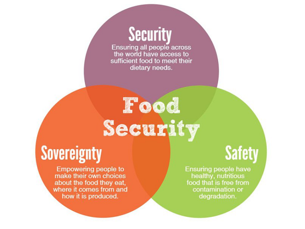
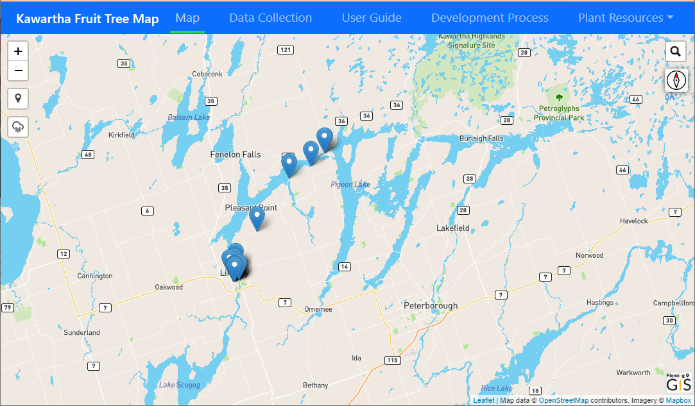
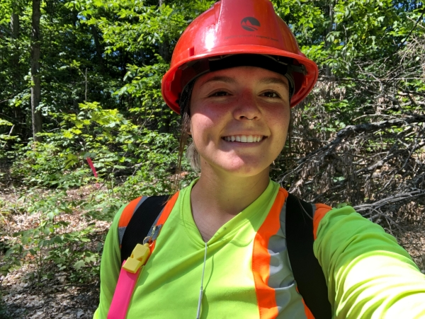

The People of the Kawartha Lakes and Haliburton Communities are in
need of support for increasing food security. There are multiple methods
of implementing a support system meant to increase Food Security in various
ways, including short-term relief (donations), capacity-building
strategies (food banks and soup kitchens), and system redesign
strategies. System Redesign strategies are those that would make free food
more accessible, continue the Basic Income Guarantee, increase Social
Assistance rates, and increase Affordable Housing, which would help
eliminate the need for the first two means. Partners for this project
include City of Kawartha Lakes, CKL and Haliburton Ending
Poverty Roundtable, and the Kawartha Lakes Food Coalition
Food Security Working Group.

The Problem
A population-based survey from the Haliburton, Kawartha, Pine Ridge District
Health Unit estimated that household food insecurity in the City of Kawartha
Lakes and Haliburton in 2019 was 14.4%. The provincial food insecurity
average sits at 13.3%. The level of food insecurity in this region is
one of the largest in the province. Ultimately the
public needs more resources and strategies that can increase food security.
One resource that can be made available is information on publicly
accessible Edible Plants in the Kawarthas, which represents a system
redesign strategy but increasing accessibility to free food. This will be
represented by a web map. Populated by the Public, Used by the Public.

The Solution
A multipronged approach is required to address food insecurity.
A resource with information on publicly accessible fruit-bearing
trees through a web map can be one of the approaches to help increase
access to fresh local food. Populated by the public, used by the public!
The goal of the website is to help the City of Kawartha Lakes and Haliburton
communities with information and locations of locally grown, publicly
accessible edible plants in the region.
This website will provide a map to display locations of locally grown
and publicly accessible fruit-bearing trees/bushes, a form for the public to use
to submit new tree locations and information, links for the public to learn how
to utilize the fruit, and guides to help the public identify trees/bushes properly.
Meet the Crew!
Korey Hayes
Acting as the Web and Programming coordinator, Korey is a Fleming College Forestry Technician graduate currently in the GIS Applications Specialist program.
Navjot Kaur Sodhi
Acting as the File Manager and Technology Facilitator, Navjot is a Punjabi University Masters of Astronomy and Space Physics program graduate, currently in the GIS Cartography Specialist program.

Riley Sweeney
Acting as the project administrator, Riley is a Fleming College Forestry Technician graduate currently in the GIS Applications Specialist program